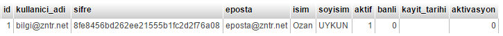
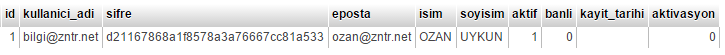

User(Kullanıcı) Sınıfı
Kullanıcılar veya üyelerle ilgili bir takım işlemlerin yapıldığı sınıftır. Yeni üyelik, siteye giriş, aktivasyon, üye bilgilerini kullanma gibi işevleri vardır.
User Kütüphanesini Dahil Etmek
User Sınıfını Veritabanıyla İlişkilendirmek ve Konfigürasyon Dosyasını Yapılandırmak
Kullanıcı işlemleri veritabanı kaydı gerektirdiğinden bazı tablo ve sütun bilgilerini konfigürasyon dosyasından ayarlamak gerekmektedir. Bu ayarlar düzgün yapıldığında sınıfı sorunsuzca kullanabilirsiniz. Aşağıda User sınıfına ait konfigürasyon dosyasının içeriğine yer verilmiştir.
Config/User.php dosyasını açtığınızda aşağıdaki ayarları göreceksiniz.
$config ["User" ]["table_name" ] ="" ; // Sınıfın bağlanacağı tablo adı$config ["User" ]["username_column" ] ="" ; // varchar içerikli sütun$config ["User" ]["password_column" ] ="" ; // varchar içerikli sütun$config ["User" ]["email_column" ] ="" ; // varchar içerikli sütun kullanımı zorunlu değildir.$config ["User" ]["active_column" ] ="" ; // 0 veya 1 değeri alan sütun kullanımı zorunlu değil ancak kullanılmayacaksa boş bırakılmalıdır.$config ["User" ]["banned_column" ] ="" ; // 0 veya 1 değeri alan sütun kullanımı zorunlu değil ancak kullanılmayacaksa boş bırakılmalıdır.$config ["User" ]["activation_column" ] ="" ; // 0 veya 1 değeri alan sütun kullanımı zorunlu değil ancak kullanılmayacaksa boş bırakılmalıdır.
Şimdi yukarıdaki ayarları tek tek açıklayalım.
User sınıfının bağlantı kuracağı kullanıcı bilgilerini tutulduğu veya tutulacak olan tablo adını giriyoruz. Bizim uyeler adında üyelerin bilgilerin tutulduğu bir tablomuz olduğunu varsayalım. Bu tablomuzda da şu sütunlar olsun:$config ["User" ]["table_name" ] ="uyeler" ;
Site içinde kullanılacak kullanıcı adlarının tutulacağı kullanıcı adı sütununu belirlememiz gerekir. Yukarıda oluşturduğumuz uyeler tablosunda kullanıcı adı olarak kullanılacak sütun kullanici_adi olarak belirlenmiştir. Bu nedenle ayarın karşısına bu ifadeyi yazdık.$config ["User" ]["username_column" ] ="kullanici_adi" ;
Kullanıcıların şifrelerininde tutulduğu bir sütun olmalıdır bu sütun adı ne ise ayarın karşısına o sütun adını yazarız. Yukarıda oluşturduğumuzu varsaydığımız tabloyu incelersek şifre bilgilerinin tutulacağı sütun adını sifre olarak oluşturduk bu nedenle ayarın karşısınada bu ifadeyi yazdık.$config ["User" ]["password_column" ] ="sifre" ;
Bu sütun kullanıcı adı sütunu e-posta bilgisi içermeyecekse kullanılır. Aktivasyon veya şifre hatırlatma yöntemlerini kullanabilmek için veritabanının bir e-posta bilgisi tutan sütuna ihtiyacı vardır genel olarak bu sütun günümüz uygulamalarında kullanıcı adı sütunudur ancak bu sütun e-posta bilgisi içermiyorsa o halde e-posta bilgisini tutacak sütunun adı bu alana girilmelidir.$config ["User" ]["email_column" ] ="eposta" ;
Bu ayarın kullanımı zorunlu değildir şayet kullanmayı tercih etmiyorsanız boş bırakmanız gerekmektedir ancak yukarıda oluşturuduğumuz üyeler tablosunda aktif adında bir sütuna yer verdik bu sütun 0 ve 1 değerlerinden oluşan bir veri türü içermelidir. İşlevi kullanıcıların o an için aktif olup olmadığı bilgisini öğrenmektir.$config ["User" ]["active_column" ] ="aktif" ;
Bu ayarın kullanımı zorunlu değildir şayet kullanmayı tercih etmiyorsanız boş bırakmanız gerekmektedir ancak yukarıda oluşturuduğumuz üyeler tablosunda banli adında bir sütuna yer verdik bu sütun 0 ve 1 değerlerinden oluşan bir veri türü içermelidir. İşlevi eğer bir kullanıcı banlanmışsa yani sütun değeri 1 olmuş ise o kullanıcın siteye girişine izin vermemektir.$config ["User" ]["banned_column" ] ="banli" ;
Bu ayarın kullanımı zorunlu değildir şayet kullanmayı tercih etmiyorsanız boş bırakmanız gerekmektedir ancak yukarıda oluşturuduğumuz üyeler tablosunda aktivasyon adında bir sütuna yer verdik bu sütun 0 ve 1 değerlerinden oluşan bir veri türü içermelidir. İşlevi kullanıcı kayıt olduktan sonra aktivasyon işlemi gerçekleştirsin mi'dir.$config ["User" ]["activation_column" ] ="aktivasyon" ;
Ayarlarımızı yapılandırdığımıza göre User sınıfı ve yöntemlerini anlatamaya başlayabiliriz.
Siteye Kayıt Olmak
Üyelerin kayıtlarını oluşturan yöntemdir tek bir dizi parametresi vardır. Kayıt Bilgileri.
| Parametre | Anlamları |
|---|---|
| 1. Parametre = Kayıt Bilgileri | Veritabanına kayıt yapılacak veriler. |
| 2. Parametre = [ Aktivasyon Dönüş Linki ] | Aktivasyon işlemi yapılacaksa bu parametre girilir. Örnek: kayit/aktivasyon |
Active, banned ve activasyon sütunlarını User sınıfı kendi kullanmaktadır bu yüzden bizim bu sütunlarla işimiz olmayacak.
import::library('User' );// Bu bilgilerin form nesnelerinden geldiğini varsayalım. $bilgiler =array ('kullanici_adi' =>'bilgi@zntr.net' ,'sifre' =>'zntr1234' ,'eposta' =>'eposta@zntr.net' ,'isim' =>'Ozan' ,'soyisim' =>'UYKUN' ); user::register($bilgiler ,'kayit/aktivasyon/kullanici' );var_dump (user::error());// boolean false var_dump (user::success());// string 'Kaydınızı başarı ile tamamlandı.' (length=38) /* Aktivasyon e-postası kullanıcıya ulaşmıssa e-posta içinde şöyle bir url ile kaşılacak. http://www.ornek.com/index.php/kayit/aktivasyon/kullanici/bilgi@zntr.net/8fe8456bd262ee215555b1fc2d2f76a08 */ 
Görüldüğü gibi konfigürasyon ayarları yapıldıktan sonra bir üyenin kayıt olması işlemi bu kadar basittir. Tabi burada herhangi bir gelen veri kontrolü yapılmamıştır bu kontrolü Validation sınıfını anlatırken değineceğiz siz formlardan gelen verileri validasyon kontrolüne tabi tutmalısınız.
Siteye Giriş Yapmak
Üyelerin kayıtlarını oluşturan yöntemdir tek bir dizi parametresi vardır. Kayıt Bilgileri.
| Parametre | Anlamları |
|---|---|
| 1. Parametre = Kullanıcı Adı | Sisteye giriş yapılacak kullanıcı adı. |
| 2. Parametre = Şifre | Siteye giriş için gerekli olan kullanıcı şifresi. |
| 3. Parametre = [Beni Hatırlasın Mı = false] | Bir sonraki giriş için kullanıcı adı hatırlansın mı? |
import::library('User' );// Bu bilgilerin form nesnelerinden geldiğini varsayalım. user::login('bilgi@zntr.net' ,'zntr1234' );// Az önce oluşturduğumuz kullanıcı adı ve şifre bilgisini burada veri olarak giriyoruz. var_dump (user::error());// boolean false var_dump (user::success());// string 'Başarı ile giriş yaptınız. Yönlendiriliyorsunuz.. Lütfen bekleyin.' (length=73)
Üyelik Bilgilerini Güncellemek
Bu yöntemin esas işlevi üyenin şifre bilgilerinin güncellemesidir ancak istenirse şifre güncellenirken yanında başka verilerilerin güncellenmesinede olanak sağlar.
| Parametre | Anlamları |
|---|---|
| 1. Parametre = Eski Şifre | Kullanıcının eski şifresi. |
| 2. Parametre = Yeni Şifre | Kullanıcının yeni şifresi. |
| 3. Parametre = [Yeni Şifre Tekrar] | Yeni şifrenin tekrarı girilmezse Yeni Şifre parametresinin değerini alır. |
| 4. Parametre = [Diğer Bilgiler] | Güncellenmek istenen başka veriler varsa bu parametreye dizi olarak girilir. |
import::library('User' );// Bu bilgilerin form nesnelerinden geldiğini varsayalım. $bilgiler =array ('isim' =>'OZAN' ,'eposta' =>'ozan@zntr.net' );// param1 = eski şifre, param2 = yeni şifre, param3 = yeni şifre tekrar, param4 = diğer bilgiler. user::update('zntr1234' ,'zntr12' ,'zntr12' ,$bilgiler );var_dump (user::error());// boolean false var_dump (user::success());// string 'Güncelleme işlemi başarılı.' (length=32) 
Üyelik Oturumunu Kapatmak
Aktif kullanıcının oturumunu sonlandırmak için kullanılır.
import::library('User' );// Bu bilgilerin form nesnelerinden geldiğini varsayalım. user::logout();// Bu satır itibari ile oturum sonlandırılmıştır. var_dump (user::error());// boolean false var_dump (user::success());// boolean false
Üye Girişinin Yapılıp Yapılmadığını Kontrol Etmek
Kullanıcının siteye giriş yapıp yapmadığı bilgisini verir eğer giriş yapmış ise true değeri döner aksi halde false değeri döner.
import::library('User' );// Bu bilgilerin form nesnelerinden geldiğini varsayalım. if (user::is_login())echo "Kullanıcı sitede aktif" ;else echo "Kullanıcı aktif değil" ;// Az önce user::logout() ile çıkış yapıldığından Çıktı: Kullanıcı aktif değil olacaktır.
Oturum Açan Üyenin Bilgilerine Ulaşmak
Giriş yapan kullanıcıların üyelik bilgilerine ulaşmak için kullanılır. Bilgiler object veri tipinde dönmektedir.
import::library('User' );// Bu bilgilerin form nesnelerinden geldiğini varsayalım. user::login('bilgi@zntr.net' ,'zntr12' );var_dump (user::data());echo user::data()->kullanici_adi;/* object(stdClass)[2] public 'id' => string '1' (length=1) public 'kullanici_adi' => string 'bilgi@zntr.net' (length=14) public 'sifre' => string 'd21167868a1f8578a3a76667cc81a533' (length=32) public 'eposta' => string 'ozan@zntr.net' (length=13) public 'isim' => string 'OZAN' (length=4) public 'soyisim' => string 'UYKUN' (length=5) public 'aktif' => string '1' (length=1) public 'banli' => string '0' (length=1) public 'kayit_tarihi' => string '' (length=0) public 'aktivasyon' => string '0' (length=1) bilgi@zntr.net */
Şifremi Unuttum Sistemi Oluşturmak
Kullanıcıların şifrelerini unutmaları durumunda kullanıcıların e-posta adreslerine yeni şifrelerinin gönderimini sağlar.
| Parametre | Anlamları |
|---|---|
| 1. Parametre = E-posta Adresi | Yeni şifrenin gönderileceği e-posta adresi girilir. |
| 2. Parametre = [Geri Dönüş URL Adresi] | Gelen şifremi unuttum e-postası açıldığında içerisinde dönüş için bir link olacak onun belirlenmesini sağlar. Örnek kullanici/giris |
import::library('User' );// Bu bilgilerin form nesnelerinden geldiğini varsayalım. // param1 = e-posta adresi, param2 = http://www.ornek.com/index.php/kullanici/giris. user::forgot_password('bilgi@zntr.net' ,'kullanici/giris' );// 1. Parametre e-posta. // 2. Parametre'nin esas değeri = http://www.ornek.com/index.php/kullanici/giris şeklinde e-posta içeriğine siteye dönüş linki olarak yansıyacaktır. var_dump (user::success());// string 'E-posta başarı ile gönderildi.' (length=22) var_dump (user::error());// boolean false
Yeni şifreyi gönderebilmek için önce e-posta sütununa bakılır böyle bir sütun yok ise kullanıcı adı sütununa bakılır kullanıcı adı sütunuda e-posta bilgisi içermiyorsa yeni şifre gönderim işlemi tamamlanamaz ve "sistemde kayıtlı değilsiniz hatası" alırsınız.
Aktivasyon İşlemini Tamamlamak
Eğer aktivasyon işlemi kullanılmışsa user::register() yönteminin ikinci parametresinde dönüş yolu verilir işte bu dönüş yolu aktivasyon işleminin tamamlanacağı sayfanın ta kendisidir. E-posta adresine gönderilen aktivasyon linkine tıklayan kullanıcı sizin belirlediğiniz sayfaya yönlenir bu sayfaya gelen kullanıcının aktivasyon işleminin tamamlanmış olması için bu sayfada user::activation_complete() fonksiyonun kullanılmış olması gerekir. Aktivasyon işlemi başarılı olursa yöntemin döndüreceği değerler başarılı olursa